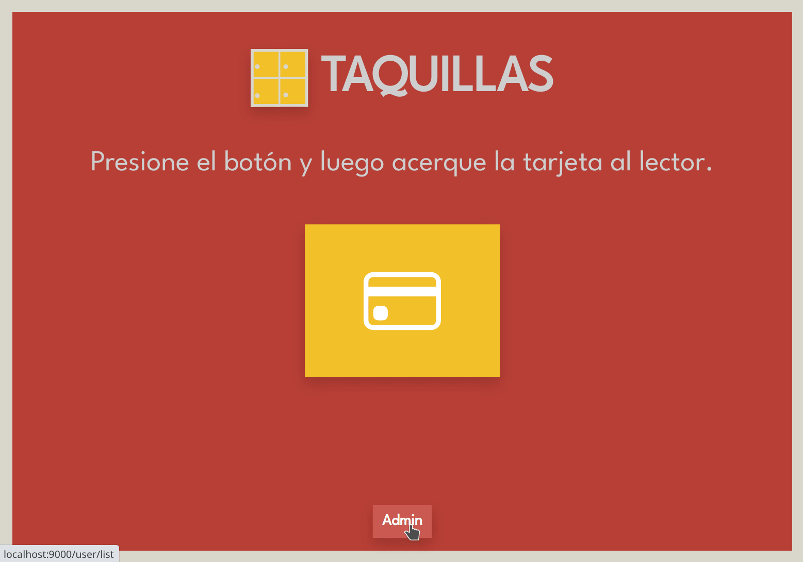

App Taquillas
App Taquillas es una aplicación creada para gestionar el acceso a un taquillero mediante el uso de tarjetas NFC.
Instrucciones de instalación en la página de GitHub
Demo de funcionamiento
Demo de funcionamiento con lector de tarjetas y relés